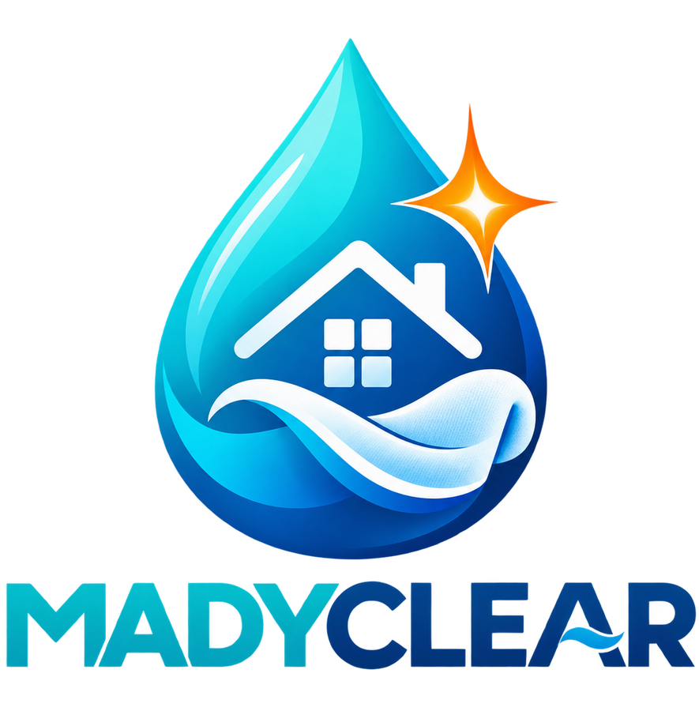

La propreté en toute simplicité
Choisissez votre besoin. Cela prend environ une minute.
*Avantage fiscal : estimation à 50 % pour les prestations à domicile éligibles aux services à la personne. Le prix facturé reste le tarif public ; conditions, plafonds et Avance immédiate selon éligibilité et activation du service.
Nous utilisons ces informations uniquement pour traiter votre demande et votre rendez-vous.
Le créneau est une demande de réservation. MADYCLEAR le confirme après vérification du trajet et de la durée.